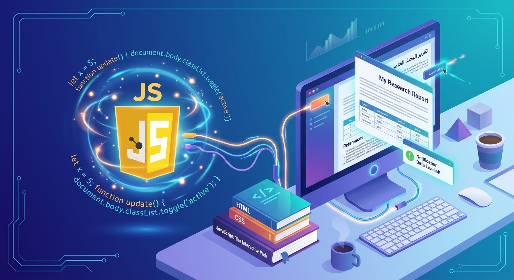

اسم الطالبة:شيماء ايهاب عادل علي حسن عبد الفتاح
الرقم الجامعي: 2502071
لغة JavaScript (جافا سكريبت) هي لغة برمجية تُستخدم بشكل أساسي لجعل صفحات الويب تفاعلية وديناميكية وتُعتبر جافا سكريبت إحدى الركائز الأساسية لبناء مواقع الويب الحديثة حيث تتيح للمستخدمين التفاعل مع الأزرار، والقوائم المنبثقة، والرسوم المتحركة، وتحديث محتوى الصفحة دون الحاجة لإعادة تحميلها.

تُعرف JavaScript بأنها لغة برمجة نصية (Scripting Language) كائنية التوجه (Object-Oriented). تُشكل مع HTML و CSS الثالوث الأساسي لبناء وتطوير الويب:
- HTML: تُستخدم لتحديد هيكل ومحتوى الصفحة.
- CSS: تُستخدم لتصميم وتنسيق مظهر الصفحة.
- JavaScript: تُستخدم لإحداث التفاعل (مثل: تشغيل الرسوم المتحركة، التحقق من البيانات، وتحديث المحتوى دون إعادة تحميل الصفحة).
ملاحظة هامة: لا توجد علاقة بين Java و JavaScript؛ فهما لغتان مختلفتان تماماً من حيث التصميم والاستخدام، وكان اختيار الاسم مجرد خدعة تسويقية في التسعينيات.
- الظهور: ابتكرها المبرمج برندان آيخ (Brendan Eich) عام 1995 أثناء عمله في شركة Netscape، وتم تطوير النسخة الأولى منها في 10 أيام فقط تحت اسم "Mocha" ثم "LiveScript" وأخيراً "JavaScript".
- المعيارية (ECMAScript): لضمان عمل اللغة بنفس الطريقة على جميع المتصفحات، تم إخضاعها لمنظمة معايير ECMA. النسخ الحديثة تُعرف باسم ECMAScript (مثل ES6 التي أحدثت ثورة عام 2015).
- لغة عالية المستوى وسهلة التعلم: قواعدها الكتابية قريبة من اللغة الإنجليزية ومناسبة للمبتدئين.
- التشغيل في المتصفح (Client-Side): تُنفذ مباشرة على جهاز المستخدم، مما يقلل الضغط على الخوادم ويزيد السرعة.
- مرونة عالية (Multi-paradigm): تدعم البرمجة الكائنية والبرمجة الوظيفية.
- مجتمع ضخم ودعم مستمر: تمتلك أكبر مجتمع للمطورين في العالم لتوفير حلول لأي مشكلة برمجية.
تتكون اللغة من قواعد أساسية لكتابة الأكواد، تشمل:
- المتغيرات (Variables): لتخزين البيانات باستخدام الكلمات المفتاحية (let, const, var).
- أنواع البيانات (Data Types): مثل النصوص، الأرقام، القيم المنطقية، والمصفوفات.
- الدوال (Functions): كتل من الأكواد تُكتب مرة واحدة ويمكن إعادة استخدامها.
- الجمل الشرطية والحلقات التكرارية: للتحكم في مسار البرنامج.
تحتوي المتصفحات الحديثة على محركات خاصة بقراءة وتنفيذ أكواد JavaScript بسرعة فائقة، أشهرها محرك V8 ومحرك SpiderMonkey. تقوم هذه المحركات بتحويل الكود إلى لغة الآلة مباشرة لضمان السرعة.
لم تعد JavaScript محصورة داخل المتصفح فقط، بل توسعت بفضل ظهور Node.js لتشمل تطوير الويب الخلفي (Backend)، تطبيقات الهواتف الذكية، تطبيقات سطح المكتب، والألعاب الإلكترونية.
- للواجهات الأمامية (Frontend): مثل React و Angular و Vue.js.
- للخلفية (Backend): مثل Express.js.
- لتطبيقات الهواتف: مثل React Native.
تعد JavaScript هي العصب المحرك لشبكة الإنترنت الحديثة، وتظل في صدارة لغات البرمجة الأكثر طلباً في سوق العمل مع اتجاهها نحو دمج تقنيات الذكاء الاصطناعي.
| الميزة / العنصر | HTML | CSS | JavaScript |
|---|---|---|---|
| الظيفة الأساسية | الهيكل والمحتوى | التصميم والمظهر | التفاعل والحركة |
| مكان التنفيذ | المتصفح | المتصفح | المتصفح (Client-Side) وخارجة (Node.js) |